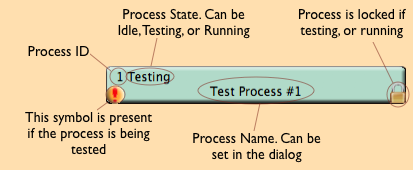
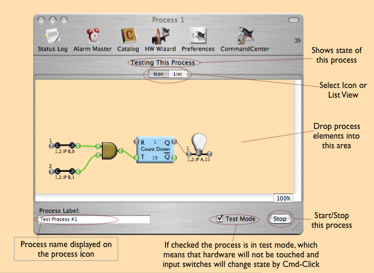
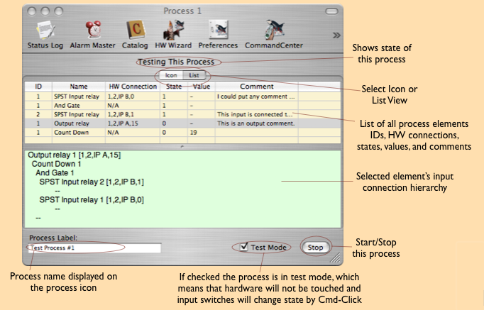

A process container is a configuration set of process elements. Process containers can be added to the main configuration window only, one process container can NOT hold another process container. The icon looks like this:

Double-clicking on the icon will open up the process container dialog. It has both an icon and a list view.


Note that double-clicking an element either in the icon or list view will bring up that element's dialog.